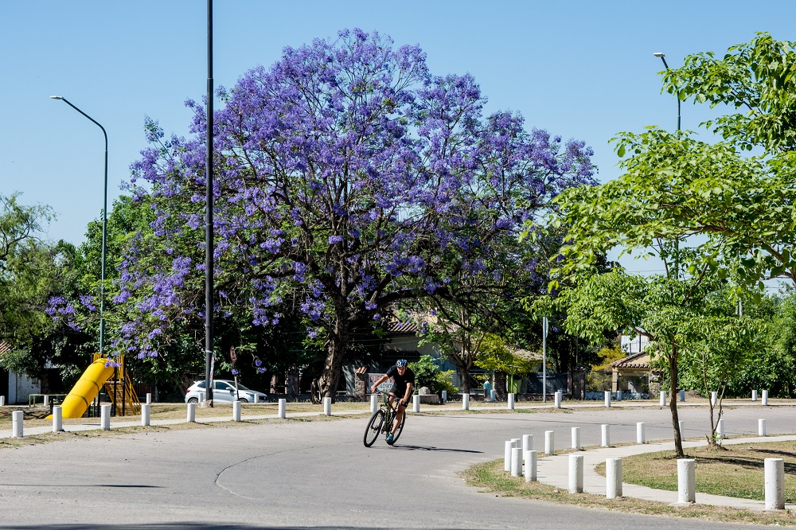
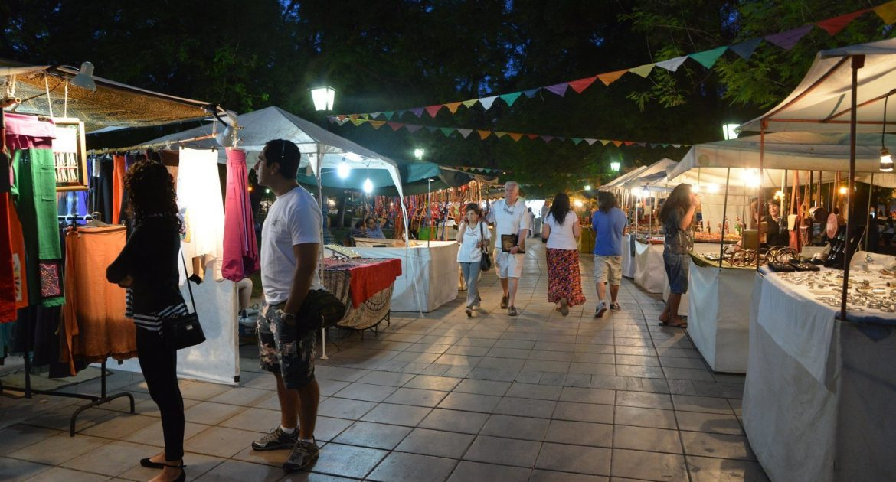

Llegada de la primavera
Producto de la llegada de la primavera, tendrán lugar en la localidad de Yerba Buena varios eventos al aire libre.
Rock en Yerba Buena
Llega el Norte Rock a Yerba Buena, con la participación de las mejores bandas del momento, entre esos, La Vela Puerca, Niki Nicolle y varias bandas locales.

Feria de artesanos
Este fin de semana tendrá lugar en la Av. Presidente Perón la feria de artesanos tradicional de Yerba Buena, con mas de 70 puestos.
